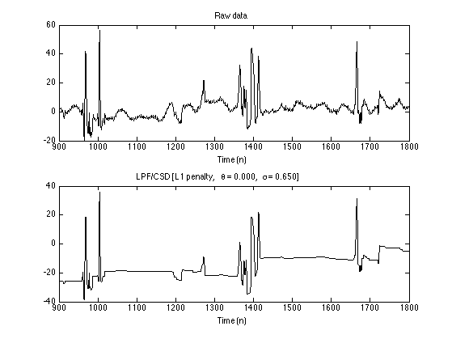
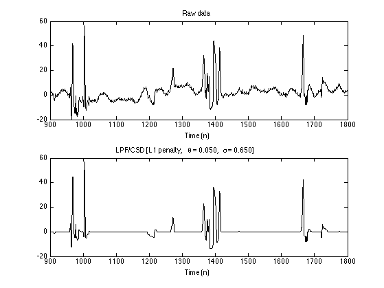
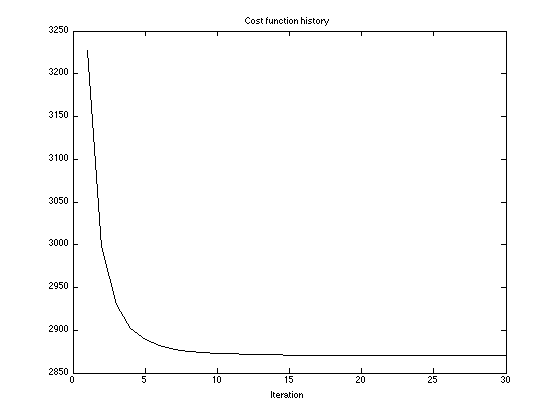
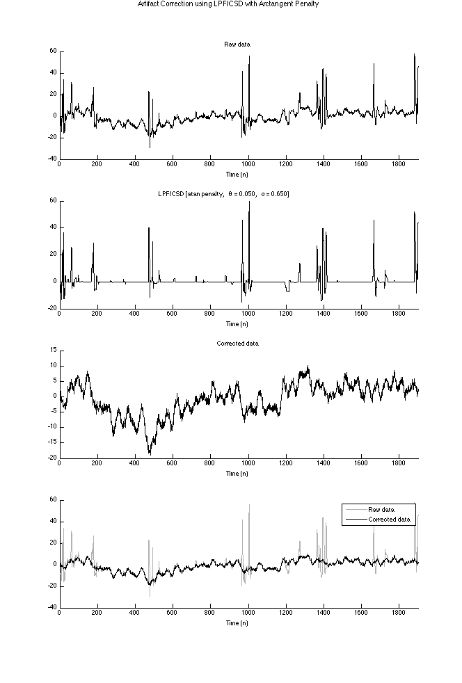

LPFCSD_Example
Illustrate LPF/CSD processing for estimation of zero base-line transient artifacts in NIRS data.
Ivan Selesnick, Polytechnic Institute of NYU, Brooklyn, NY, USA. January 2014. Revised July 2014.
Contents
Start
clear
% close all
Load data
y = load('data/wl1_col02.txt'); N = length(y); n = 1:N; figure(1) clf subplot(2, 1, 1) plot(n, y); xlim([0 N]) ax1 = axis; axis(ax1); title('Raw data') xlabel('Time (n)') xlim1 = [900 1800]; subplot(2, 1, 2) plot(n, y); xlim(xlim1) title('Raw data [Detail]') xlabel('Time (n)')

Set parameters
% Filter parameters fc = 0.05; % fc : cut-off frequency (cycles/sample) d = 1; % d : filter order parameter (d = 1, 2, or 3) % ps : psuedo-sigma (psuedo noise standard deviation) ps = 0.65; % Nit: number of algorithm iterations Nit = 30;
Set theta = 1
Equivalently, lam1 = 0. This value of theta leads to output x being sparse (if the psuudo-sigma is suitably set).
% theta : shape parameter theta = 1; % Run LPF/CSD algorithm [x0, f, cost] = lpfcsd2(y, d, fc, theta, ps, 'L1', 0, 0, Nit); txt0 = sprintf('LPF/CSD [L1 penalty, \\theta = %.3f, \\sigma = %.3f]', theta, ps); figure(1) clf subplot(2, 1, 1) plot(n, y) xlim(xlim1) title('Raw data') xlabel('Time (n)') subplot(2, 1, 2) plot(n, x0); xlim(xlim1) title(txt0) xlabel('Time (n)')

Set theta = 0
Equivalently, lam0 = 0. This value of theta leads to output x for which the derivative is sparse (if the psuudo-sigma is suitably set).
% theta : shape parameter theta = 0; % Run LPF/CSD algorithm [x1, f, cost] = lpfcsd2(y, d, fc, theta, ps, 'L1', 0, 0, Nit); txt1 = sprintf('LPF/CSD [L1 penalty, \\theta = %.3f, \\sigma = %.3f]', theta, ps); figure(1) clf subplot(2, 1, 1) plot(n, y) xlim(xlim1) title('Raw data') xlabel('Time (n)') subplot(2, 1, 2) plot(n, x1); xlim(xlim1) title(txt1) xlabel('Time (n)')
With theta = 1, the CSD component does not have the little blocks. With theta = 0, the CSD component does not have a baseline of zero.
Intermediate theta value
0 < theta < 1
% theta : shape parameter theta = 0.05; % Run LPF/CSD algorithm [x, f, cost, lam0, lam1] = lpfcsd2(y, d, fc, theta, ps, 'L1', 0, 0, Nit); txt = sprintf('LPF/CSD [L1 penalty, \\theta = %.3f, \\sigma = %.3f]', theta, ps); figure(1) clf subplot(2, 1, 1) plot(n, y) xlim(xlim1) title('Raw data') xlabel('Time (n)') subplot(2, 1, 2) plot(n, x); xlim(xlim1) title(txt) xlabel('Time (n)')
Display output signals
set(0, 'DefaultAxesFontSize', 9) figure(2) clf subplot(4, 1, 1) line(n, y); title('Raw data') xlim([0 N]) xlabel('Time (n)') subplot(4, 1, 2) line(n, x0) title(txt0) xlim([0 N]) xlabel('Time (n)') subplot(4, 1, 3) line(n, x1) title(txt1) xlim([0 N]) xlabel('Time (n)') subplot(4, 1, 4) line(n, x); title(txt) xlim([0 N]) xlabel('Time (n)') figtitle('Estimation of Artifacts using LPF/CSD with L1 Penalty'); orient tall print -dpdf figures/LPFCSD_Example_fig1


Display corrected data
figure(2) clf subplot(4, 1, 1) line(n, y, 'color', 'black'); title('Raw data'); xlim([0 N]) xlabel('Time (n)') subplot(4, 1, 2) line(n, x - median(x), 'color', 'black'); title(txt) xlim([0 N]) xlabel('Time (n)') subplot(4, 1, 3) line(n, y - x, 'color', 'black'); title('Corrected data') xlabel('Time (n)') xlim([0 N]) GRAY = [1 1 1] * 0.7; subplot(4, 1, 4) line(n, y, 'color', GRAY, 'lineWidth', 1) line(n, y - x, 'color', 'black'); legend('Raw data', 'Corrected data') xlim([0 N]) xlabel('Time (n)') figtitle('Artifact Correction using LPF/CSD with L1 Penalty'); orient tall print -dpdf figures/LPFCSD_Example_fig2

Display cost function history
The cost function converges within 30 iterations.
figure(1) clf plot(cost) title('Cost function history') xlabel('Iteration')
Lambda parameters
Verify that lpfcsd and lpfcsd2 give the same output signals when lpfcsd is used with the corresponding lambda parameter values.
% Run LPF/CSD algorithm [x, f, cost, lam0, lam1] = lpfcsd2(y, d, fc, theta, ps, 'L1', 0, 0, Nit); [x_, f_, cost_] = lpfcsd(y, d, fc, lam0, lam1, 'L1', 0, 0, Nit); % These values should be zero or approximately zero disp(max(abs(x - x_))) disp(max(abs(f - f_))) disp(max(abs(cost - cost_)))
0
0
0
Non-convex penalty
The L1 norm penalty, used above, can lead to an under-estimation of the amplitudes of transients. Non-convex penalties can estimate the amplitude of transients more fully. Here, we use the 'atan' non-convex penalty.
% theta : shape parameter theta = 0.05; % pen : penalty function pen = 'atan'; % r : non-convexity parameter (nominal value = 0.5) r = 0.5; txt = sprintf('LPF/CSD [%s penalty, \\theta = %.3f, \\sigma = %.3f]', pen, theta, ps); % Run LPF/CSD algorithm % Initialize with L1 solution [x_atan, f_atan, cost, lam0, lam1] = lpfcsd2(y, d, fc, theta, ps, pen, r, r, Nit, x); % [x_atan, f_atan, cost, lam0, lam1] = lpfcsd2(y, d, fc, theta, ps, pen, r, r, Nit); figure(2) clf subplot(4, 1, 1) line(n, y, 'color', 'black'); title('Raw data'); xlabel('Time (n)') xlim([0 N]) subplot(4, 1, 2) line(n, x_atan - median(x_atan), 'color', 'black'); title(txt) xlabel('Time (n)') xlim([0 N]) subplot(4, 1, 3) line(n, y - x_atan, 'color', 'black'); title('Corrected data') xlabel('Time (n)') xlim([0 N]) GRAY = [1 1 1] * 0.7; subplot(4, 1, 4) line(n, y, 'color', GRAY, 'lineWidth', 1) line(n, y - x_atan, 'color', 'black'); legend('Raw data', 'Corrected data') xlabel('Time (n)') xlim([0 N]) figtitle('Artifact Correction using LPF/CSD with Arctangent Penalty'); orient tall print -dpdf figures/LPFCSD_Example_fig3
set(0, 'DefaultAxesFontSize', 'remove')